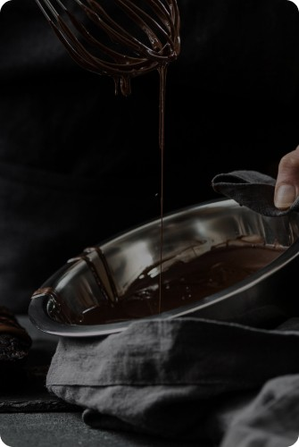

<!-- Section how-it's-made -->

<section class="how-made">

   <div class="how-made-container container">
      <h2 class="how-made-title" id="how-made">
         hOW IT’S
         <span class="how-made-title-accent">made?</span>
      </h2>
      <div class="how-made-wrap">
         <div class="how-made-img-wrap    js-menu-container" id="mobile-menu">
            <picture class="how-made-img">
               <!-- Desctop screen -->
               <source media="(min-width: 1200px)"
                  srcset="../img/how-made/made-desk.webp 1x, ../img/how-made/made-desk@2x.webp 2x" type="image/webp"
                  loading="lazy">
               <source media="(min-width: 1200px)"
                  srcset="../img/how-made/made-desk.jpg 1x, ../img/how-made/made-desk@2x.jpg 2x" type="image/jpg"
                  loading="lazy">
               <!-- Tablet screen -->
               <source media="(min-width: 768px)"
                  srcset="../img/how-made/made-tab.webp 1x, ../img/how-made/made-tab@2x.webp 2x" type="image/webp"
                  loading="lazy">
               <source media="(min-width: 768px)"
                  srcset="../img/how-made/made-tab.jpg 1x, ../img/how-made/made-tab@2x.jpg 2x" type="image/jpg"
                  loading="lazy">
               <!-- Mobile screen -->
               <source media="(max-width: 767.9px)"
                  srcset="../img/how-made/made-mob.webp 1x, ../img/how-made/made-mob@2x.webp 2x" type="image/webp"
                  loading="lazy">
               <source media="(max-width: 767.9px)"
                  srcset="../img/how-made/made-mob.jpg 1x, ../img/how-made/made-mob@2x.jpg 2x" type="image/jpg"
                  loading="lazy">
               
            </picture>
            <button class="how-made-btn js-open-menu" type="button" aria-expanded="false" aria-controls="mobile-menu">
               <svg class="how-made-icon small " width="14" height="15">
                  <use href="../img/icons/icons.svg#play-btn"></use>
               </svg>
               <svg class="how-made-icon big" width="20" height="21">
                  <use href="../img/icons/icons.svg#play-btn"></use>
               </svg>
            </button>
            <div class="how-made-video">
               <iframe autoplay="1" width="560" height="315" src="https://www.youtube.com/embed/o767PuYbEXg"
                  title="YouTube video player" frameborder="0"
                  allow="accelerometer; autoplay; clipboard-write; encrypted-media; gyroscope; picture-in-picture; web-share"
                  allowfullscreen>
               </iframe>
            </div>
         </div>
         <div class="how-made-descr-wrap">
            <p class="how-made-subtitle">Try our chocolates today and discover the perfect balance of flavor</p>
            <ul class="how-made-list">
               <li class="how-made-item">Heat the milk in a saucepan without bringing it to a boil. Add sugar and cocoa
                  powder.
               </li>
               <li class="how-made-item">At the same time, prepare a water bath. Melt the butter on it.</li>
               <li class="how-made-item">"Mix" the milk mixture and already liquid butter. Mix thoroughly with a
                  silicone
                  spatula
                  so that the mass
                  becomes
                  uniform and silky.</li>
               <li class="how-made-item">Heat the mixture over low heat, letting it barely boil.</li>
               <li class="how-made-item">Pour the chocolate into special containers (can be replaced with ice molds).
                  Allow
                  to
                  cool and harden.</li>
            </ul>
         </div>
      </div>
   </div>


</section>